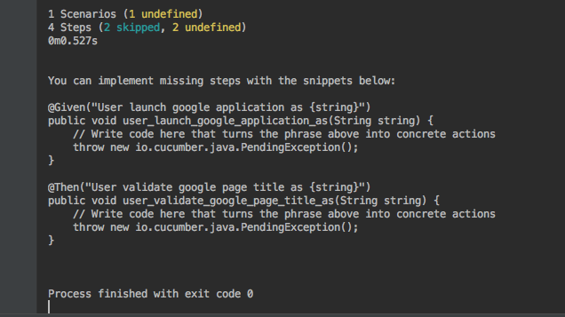
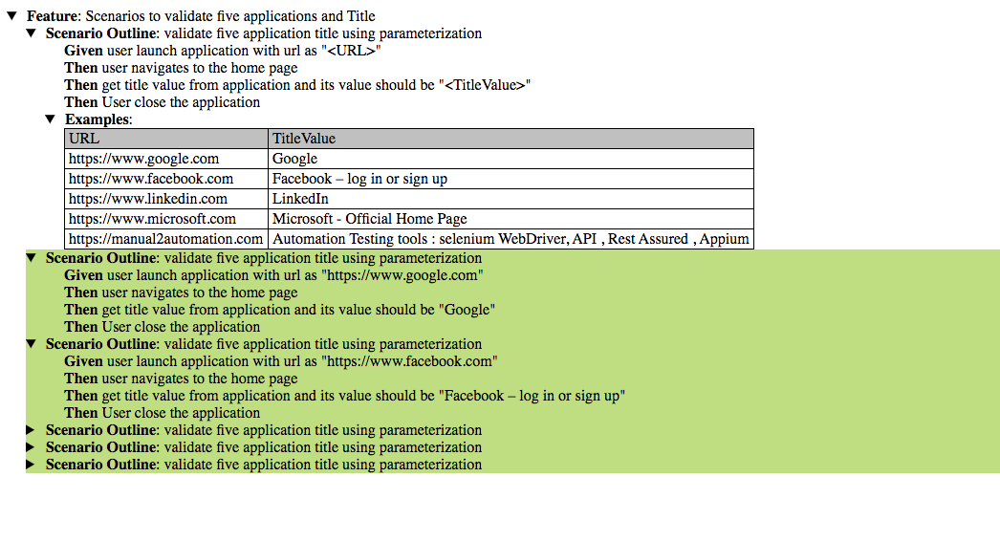
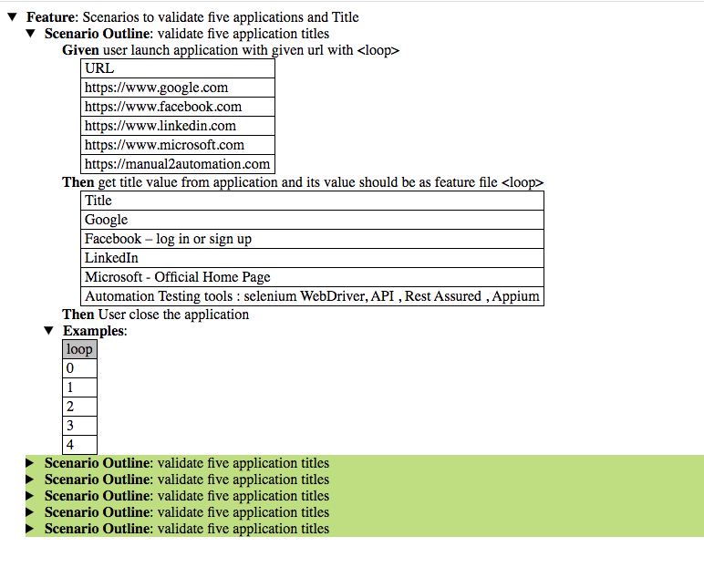

Cucumber test data Parameterization can be achieved in various way.
Consider below feature file , Where google url & title are not passing from feature file.
Feature: Scenarios to validate google Application Scenario: Check for Google Title Given User launch google application Then User should see google home page Then User validate google page title And user close the application
To pass google url and title value from feature file , we can write it as below.
Feature: Scenarios to validate google Application Scenario: Check for Google Title Given User launch google application as "https://www.google.com" Then User should see google home page Then User validate google page title as "Google" And user close the application
When we change a Feature file steps , then we need to recreate stepDefinition for those steps. Here we have changed two Feature file steps , let's rerun the feature file. It will automatically generate steps for those two steps.
You can implement missing steps with the snippets below:
@Given("User launch google application as {string}")
public void user_launch_google_application_as(String string) {
// Write code here that turns the phrase above into concrete actions
throw new io.cucumber.java.PendingException();
}
@Then("User validate google page title as {string}")
public void user_validate_google_page_title_as(String string) {
// Write code here that turns the phrase above into concrete actions
throw new io.cucumber.java.PendingException();
}

Now add these two steps in stepDefinition class file as below. Where 'url' & 'title' values are parameterized and driven from feature file.
package stepDefinition; import io.cucumber.java.en.Given; import io.cucumber.java.en.Then; import org.openqa.selenium.By; import org.openqa.selenium.WebDriver; import org.openqa.selenium.chrome.ChromeDriver; import org.openqa.selenium.chrome.ChromeOptions; public class StepDeftest1 { WebDriver driver = null; @Given("User launch google application as {string}") public void user_launch_google_application_as(String string) { // Launching Google Application System.setProperty("webdriver.chrome.driver","/Users/mrouser/Downloads/chromedriver"); driver = new ChromeDriver(); driver.manage().window().maximize(); driver.get(string); } @Then("User should see google home page") public void user_should_see_google_home_page() { // Validating google search button driver.findElement(By.xpath("(//input[@value='Google Search'])[2]")).isDisplayed(); } @Then("User validate google page title as {string}") public void user_validate_google_page_title_as(String string) { // Checking for page title... if(driver.getTitle().equals(string)) { System.out.println("Google Pge Title is Pass"); } } @Then("user close the application") public void user_close_the_application() { // Close the application driver.quit(); } }
Cucumber Parameterization inside Example table:
Consider a scenario where we will launch 5 website and compare their titles.
Feature: Scenarios to validate five applications and Title # This is second scenario for parameterization Example Scenario Outline: validate five application title using parameterization Given user launch application with url as "<URL>" Then user navigates to the home page Then get title value from application and its value should be "<TitleValue>" Then User close the application Examples: | URL | TitleValue | | https://www.google.com | Google | | https://www.facebook.com | Facebook – log in or sign up | | https://www.linkedin.com | LinkedIn | | https://www.microsoft.com | Microsoft - Official Home Page | | https://manual2automation.com | Automation Testing tools : selenium WebDriver, API , Rest Assured , Appium |
# This time instead of 'Scenario' it is 'Scenario Outline'.
# Parameters are 'URL' and 'TitleValue'.
Run this feature file , it will generate stepDefinition methods.
You can implement missing steps with the snippets below:
@Given("user launch application with url as {string}")
public void user_launch_application_with_url_as(String string) {
// Write code here that turns the phrase above into concrete actions
throw new io.cucumber.java.PendingException();
}
@Then("user navigates to the home page")
public void user_navigates_to_the_home_page() {
// Write code here that turns the phrase above into concrete actions
throw new io.cucumber.java.PendingException();
}
@Then("get title value from application and its value should be {string}")
public void get_title_value_from_application_and
_its_value_should_be(String string) {
// Write code here that turns the phrase above into concrete actions
throw new io.cucumber.java.PendingException();
}
@Then("User close the application")
public void User_close_the_application() {
// Write code here that turns the phrase above into concrete actions
throw new io.cucumber.java.PendingException();
}
Copy this code to stepDefinition class file and complete the code as below.
package stepDefinition; import io.cucumber.java.en.Given; import io.cucumber.java.en.Then; import org.openqa.selenium.By; import org.openqa.selenium.WebDriver; import org.openqa.selenium.chrome.ChromeDriver; import org.openqa.selenium.chrome.ChromeOptions; public class StepDeftest1 { WebDriver driver = null; @Given("user launch application with url as {string}") public void user_launch_application_with_url_as(String string) { // Launching Google Application System.setProperty("webdriver.chrome.driver","/Users/myusername/Downloads/chromedriver"); driver = new ChromeDriver(); driver.manage().window().maximize(); driver.get(string); } @Then("user navigates to the home page") public void user_navigates_to_the_home_page() { // Validating google search button driver.findElement(By .xpath("//title")) .isDisplayed(); } @Then("get title value from application and its value should be {string}") public void get_title_value_from_application_
and_its_value_should_be(String string) { // Checking for page title... if(driver.getTitle().equals(string)) { System.out.println("Application Pge Title is Pass"); } } @Then("User close the application") public void User_close_the_application() { // Close the application driver.quit(); } }
After Execution test report would look like below.

Cucumber Parameterization using DataTable:
Consider a scenario where we will launch 5 website and compare their titles. This time feature file would look like below format.
Feature: Scenarios to validate five applications and Title
Scenario Outline: validate five application titles
Given user launch application with given url with <loop>
|URL|
| https://www.google.com |
| https://www.facebook.com |
| https://www.linkedin.com |
| https://www.microsoft.com |
| https://manual2automation.com |
Then get title value from application and its value should be as feature file <loop>
|Title|
| Google |
| Facebook – log in or sign up |
| LinkedIn |
| Microsoft - Official Home Page |
| Automation Testing tools : selenium WebDriver, API , Rest Assured , Appium |
Then User close the application
Examples:
|loop|
|0|
|1|
|2|
|3|
|4|
Note:
# Here 'loop' is an integer.
# 'URL' & 'Title' is table header.
While running this feature file it will create below stepDefinition automatically
You can implement missing steps with the snippets below:
@Given("user launch application with given url with {int}")
public void user_launch_application_with_given_url_with(Integer int1, io.cucumber.datatable.DataTable dataTable) {
// Write code here that turns the phrase above into concrete actions
// For automatic transformation, change DataTable to one of
// E, List<E>, List<List<E>>, List<Map<K,V>>, Map<K,V> or
// Map<K, List<V>>. E,K,V must be a String, Integer, Float,
// Double, Byte, Short, Long, BigInteger or BigDecimal.
//
// For other transformations you can register a DataTableType.
throw new io.cucumber.java.PendingException();
}
@Then("get title value from application and its value should be as feature file {int}")
public void get_title_value_from_application_and_its_value
_should_be_
as_feature_file
(Integer int1, io.cucumber.datatable.DataTable dataTable) {
// Write code here that turns the phrase above into concrete actions
// For automatic transformation, change DataTable to one of
// E, List<E>, List<List<E>>, List<Map<K,V>>, Map<K,V> or
// Map<K, List<V>>. E,K,V must be a String, Integer, Float,
// Double, Byte, Short, Long, BigInteger or BigDecimal.
//
// For other transformations you can register a DataTableType.
throw new io.cucumber.java.PendingException();
}
Note:
# As close application stepDefinition method was already there , no new stepDefinition generated for it.
We can implement the code as below.
package stepDefinition; import io.cucumber.java.en.Given; import io.cucumber.java.en.Then; import org.openqa.selenium.By; import org.openqa.selenium.WebDriver; import org.openqa.selenium.chrome.ChromeDriver; import org.openqa.selenium.chrome.ChromeOptions; import java.util.*; public class StepDeftest1 { WebDriver driver = null; String url,title; @Given("user launch application with given url with {int}") public void user_launch_application_with_given_url_with(Integer int1, io.cucumber.datatable.DataTable dataTable) { List<Map<String, String>> list = dataTable.asMaps(String.class, String.class); url = list.get(int1).get("URL");System.out.println(url); // Launching Google Application System.setProperty("webdriver.chrome.driver","/Users/mithunroy/Downloads/chromedriver"); driver = new ChromeDriver(); driver.manage().window().maximize(); driver.get(url); } @Then("get title value from application and its value should be as feature file {int}") public void get_title_value_from_application_
and_its_value_should_be_as_feature_file(Integer int1, io.cucumber.datatable.DataTable dataTable) { List<Map<String, String>> list = dataTable.asMaps(String.class, String.class); title = list.get(int1).get("Title");System.out.println(title); // Checking for page title... if(driver.getTitle().equals(title)) { System.out.println("Application Pge Title is Pass"); } } @Then("User close the application") public void User_close_the_application() { // Close the application driver.quit(); } }
After Execution test report would look like below.
